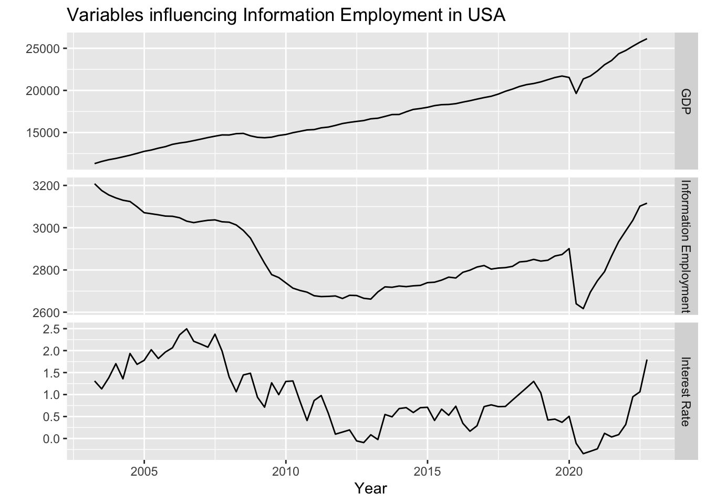
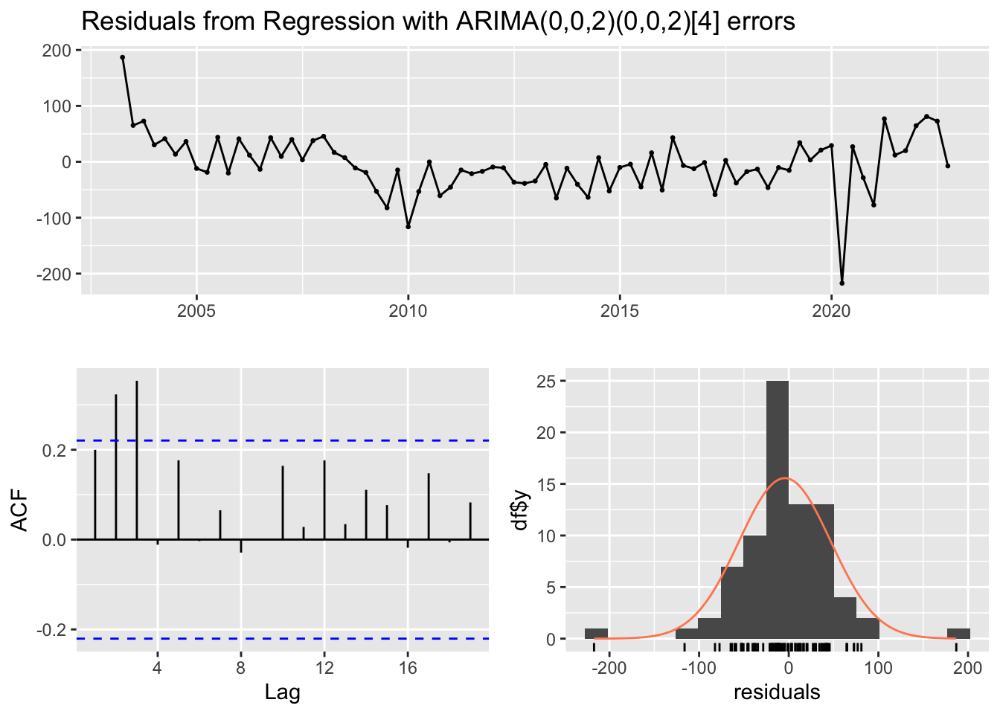
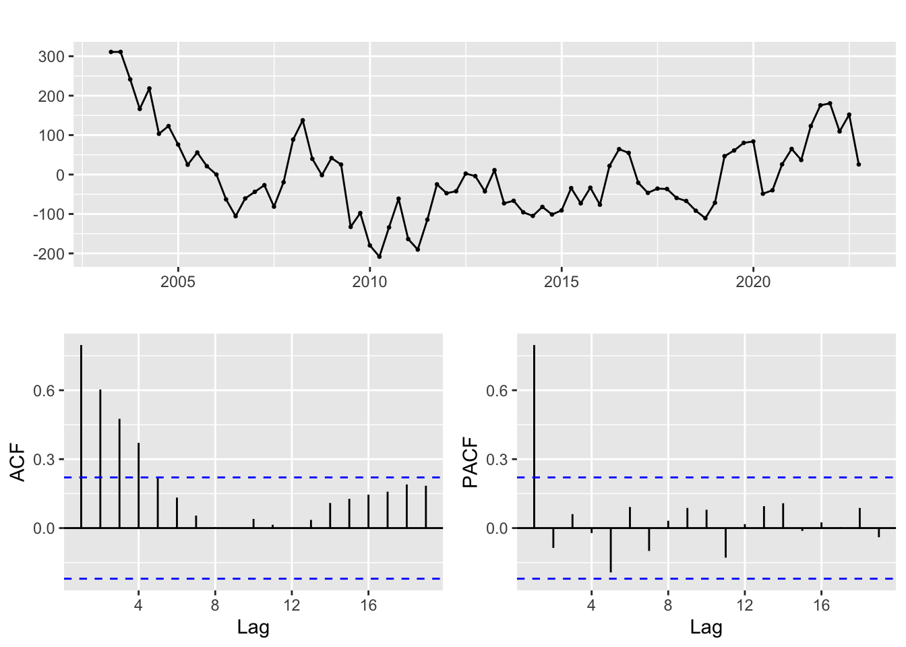
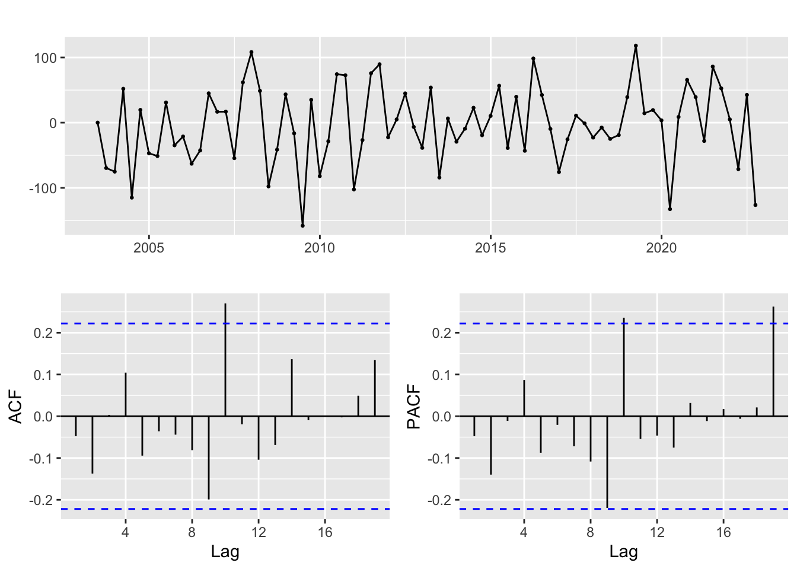
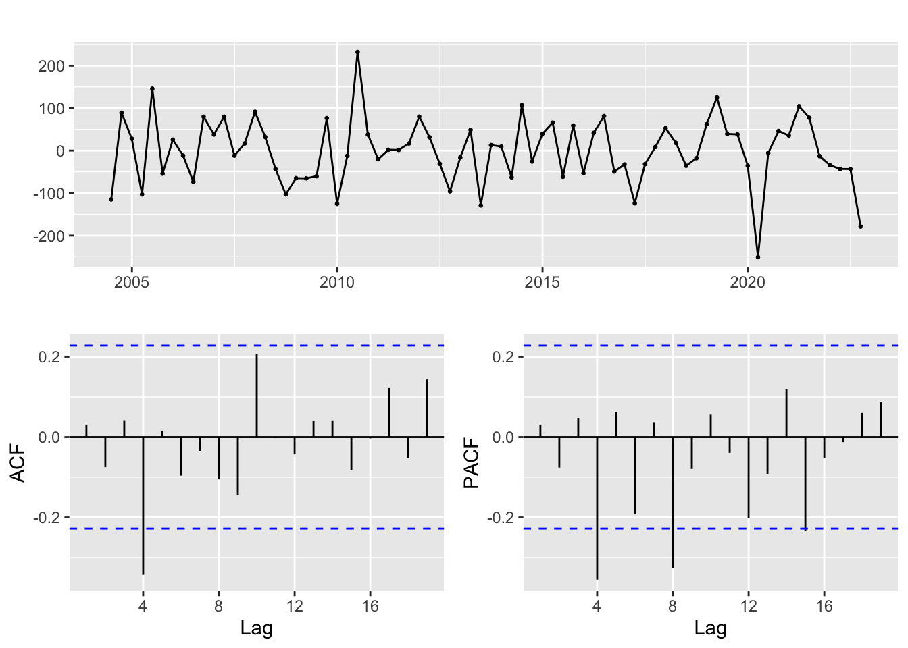
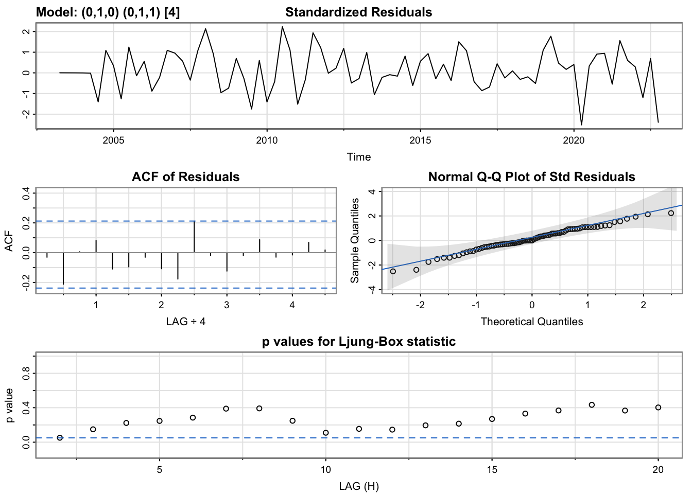
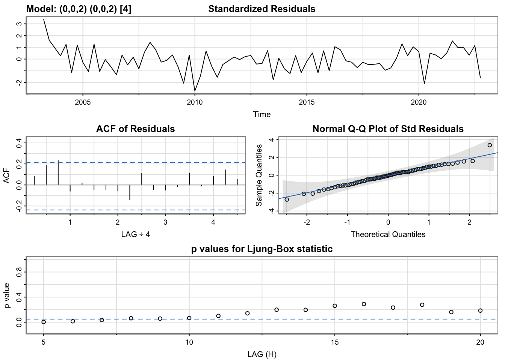
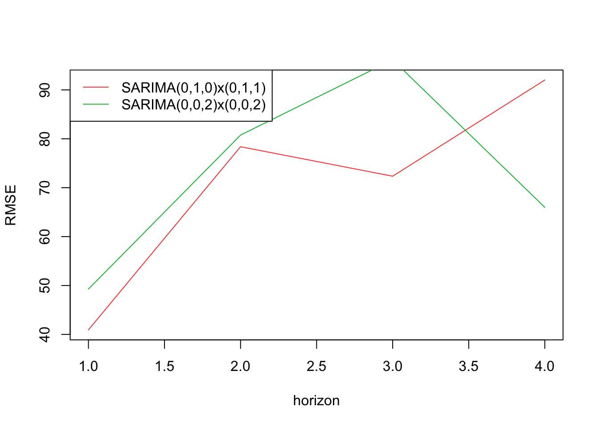
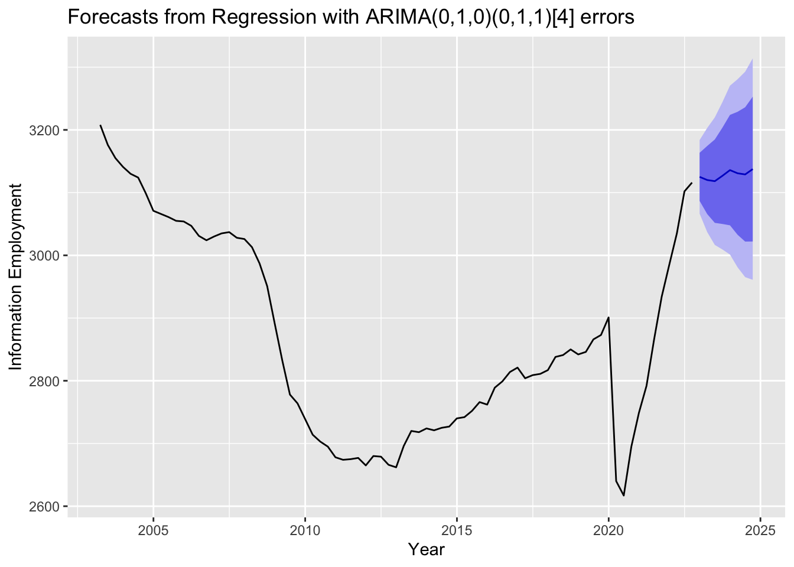

ARIMAX/SARIMAX/VAR
Literature Review
The followings are quantitative influential factors of the US employment:
Gross Domestic Product (GDP): As mentioned earlier, GDP is a key indicator of economic growth and is strongly correlated with employment levels. A higher GDP generally indicates a stronger economy, which can create new job opportunities as businesses expand and invest in new projects.
Unemployment rate: The unemployment rate measures the percentage of the labor force that is currently unemployed. A higher unemployment rate indicates a weaker job market, while a lower unemployment rate suggests a stronger job market. However, it is important to note that the unemployment rate can be influenced by factors such as labor force participation rates, which can complicate its interpretation.
Labor force participation rate: The labor force participation rate measures the percentage of the working-age population that is either employed or actively seeking employment. A higher labor force participation rate generally indicates a stronger job market, as more people are actively seeking work.
Consumer spending: Consumer spending is an important driver of economic growth, and can create job opportunities in industries such as retail and hospitality. A higher level of consumer spending generally indicates a stronger economy, which can create new job opportunities.
Business investment: Business investment is another important driver of economic growth, as it can create new job opportunities in industries such as manufacturing and construction. A higher level of business investment generally indicates a stronger economy, which can lead to increased employment levels.
Trade balance: The trade balance measures the difference between the value of a country’s exports and imports. A trade deficit (where imports exceed exports) can create job losses in certain industries, while a trade surplus (where exports exceed imports) can create job gains in certain industries.
Interest rates: Interest rates can influence the availability of credit for businesses and individuals, which can impact investment and spending decisions. Higher interest rates can make borrowing more expensive, which can reduce business investment and consumer spending, potentially leading to job losses. Conversely, lower interest rates can stimulate borrowing, investment, and spending, potentially creating new job opportunities.
After literature review of what quantitative factor would influence the US employment, I decided to use interest rates and GDP as exogenous variables and the employment as response variable to fit an ARIMAX model.
Plot the Original Data
| DATE | GDP | Information Employment | Interest Rate |
|---|---|---|---|
| 2003-04-01 | 11312.77 | 3208 | 1.309619 |
| 2003-07-01 | 11566.67 | 3176 | 1.128689 |
| 2003-10-01 | 11772.23 | 3155 | 1.380819 |
| 2004-01-01 | 11923.45 | 3141 | 1.701954 |
| 2004-04-01 | 12112.82 | 3130 | 1.358149 |
| 2004-07-01 | 12305.31 | 3124 | 1.933799 |

Fit the model using ’auto.arima()`
Series: dd.ts[, "Information Employment"]
Regression with ARIMA(0,0,2)(0,0,2)[4] errors
Coefficients:
ma1 ma2 sma1 sma2 intercept gdp ir
1.0963 0.5950 0.3649 0.4137 2683.1158 0.0080 71.3895
s.e. 0.1244 0.1404 0.1764 0.1813 116.2887 0.0067 18.2169
sigma^2 = 2856: log likelihood = -424.55
AIC=865.09 AICc=867.15 BIC=884.05
Training set error measures:
ME RMSE MAE MPE MAPE MASE ACF1
Training set -4.327941 51.0189 36.15202 -0.2118286 1.263825 0.524652 0.1997643
Ljung-Box test
data: Residuals from Regression with ARIMA(0,0,2)(0,0,2)[4] errors
Q* = 25.63, df = 4, p-value = 3.757e-05
Model df: 4. Total lags used: 8Fit the model manually
First fit the linear model:
Call:
lm(formula = `Information Employment` ~ GDP + `Interest Rate`,
data = dd)
Residuals:
Min 1Q Median 3Q Max
-208.26 -72.25 -24.87 58.45 310.97
Coefficients:
Estimate Std. Error t value Pr(>|t|)
(Intercept) 2.574e+03 8.058e+01 31.949 < 2e-16 ***
GDP 6.884e-03 3.937e-03 1.749 0.0844 .
`Interest Rate` 1.870e+02 2.035e+01 9.188 5.82e-14 ***
---
Signif. codes: 0 '***' 0.001 '**' 0.01 '*' 0.05 '.' 0.1 ' ' 1
Residual standard error: 108.1 on 76 degrees of freedom
Multiple R-squared: 0.5658, Adjusted R-squared: 0.5544
F-statistic: 49.52 on 2 and 76 DF, p-value: 1.703e-14Then, look at the residuals
Without Difference

Ordinary Difference

Ordinary Difference & Seasonal Difference

Find the model parameters.
p d q P D Q AIC BIC AICc
1 0 0 0 0 1 0 907.6150 909.9325 907.6698
2 0 1 0 0 1 0 854.4312 856.7353 854.4868
3 0 0 0 0 1 1 908.1850 912.8200 908.3517
4 0 1 0 0 1 1 828.7371 833.3452 828.9061
5 0 0 0 1 1 0 908.9794 913.6143 909.1460
6 0 1 0 1 1 0 845.9064 850.5145 846.0754
7 0 0 0 1 1 1 908.4592 915.4117 908.7972
8 0 1 0 1 1 1 829.5965 836.5087 829.9394
9 0 0 0 2 1 0 905.3131 912.2656 905.6511
10 0 1 0 2 1 0 841.9095 848.8217 842.2523
11 0 0 0 2 1 1 906.2281 915.4980 906.7995
12 0 0 1 0 1 0 859.2117 863.8467 859.3783
13 0 1 1 0 1 0 856.3489 860.9571 856.5180
14 0 0 1 0 1 1 857.7835 864.7360 858.1215
15 0 1 1 0 1 1 830.6975 837.6097 831.0404
16 0 0 1 1 1 0 859.1153 866.0678 859.4534
17 0 1 1 1 1 0 847.5417 854.4539 847.8845
18 0 0 1 1 1 1 858.8497 868.1196 859.4211
19 0 0 1 2 1 0 858.5823 867.8523 859.1538
20 0 0 2 0 1 0 859.5802 866.5326 859.9182
21 0 1 2 0 1 0 851.5891 858.5013 851.9320
22 0 0 2 0 1 1 852.2051 861.4751 852.7766
23 0 0 2 1 1 0 856.8211 866.0911 857.3926
24 1 0 0 0 1 0 857.4716 862.1066 857.6383
25 1 1 0 0 1 0 856.3631 860.9712 856.5321
26 1 0 0 0 1 1 837.9940 844.9465 838.3321
27 1 1 0 0 1 1 830.7120 837.6242 831.0548
28 1 0 0 1 1 0 851.0912 858.0436 851.4292
29 1 1 0 1 1 0 847.6911 854.6033 848.0339
30 1 0 0 1 1 1 838.2652 847.5351 838.8366
31 1 0 0 2 1 0 848.0331 857.3031 848.6045
32 1 0 1 0 1 0 856.6924 863.6448 857.0304
33 1 1 1 0 1 0 851.3537 858.2659 851.6965
34 1 0 1 0 1 1 839.6227 848.8927 840.1942
35 1 0 1 1 1 0 849.4077 858.6776 849.9791
36 1 0 2 0 1 0 857.4344 866.7044 858.0058
37 2 0 0 0 1 0 856.3557 863.3081 856.6937
38 2 1 0 0 1 0 857.8814 864.7936 858.2242
39 2 0 0 0 1 1 839.7839 849.0538 840.3553
40 2 0 0 1 1 0 850.2682 859.5382 850.8396
41 2 0 1 0 1 0 854.5722 863.8422 855.1436
42 NA NA NA NA NA NA NA NA NA p d q P D Q AIC BIC AICc
4 0 1 0 0 1 1 828.7371 833.3452 828.9061 p d q P D Q AIC BIC AICc
4 0 1 0 0 1 1 828.7371 833.3452 828.9061 p d q P D Q AIC BIC AICc
4 0 1 0 0 1 1 828.7371 833.3452 828.9061Best models: SARIMA(0,1,0)x(0,1,1)[4], auto.arima suggested: SARIMA(0,0,2)(0,0,2)[4]
Model Comparison
Model Diagnositic
SARIMA(0,1,0)x(0,1,1)[4] from Manual Fitting

SARIMA(0,0,2)x(0,0,2)[4] from auto.arima()

SARIMA(0,1,0)x(0,1,1)[4] is better
Cross Validation

[1] 40.92118 78.38342 72.35350 92.02167[1] 49.26815 80.76242 96.15649 65.98401SARIMA(0,1,0)x(0,1,1)[4] is better based on low RMSE
Best Model Fitting
Series: dd$`Information Employment`
Regression with ARIMA(0,1,0)(0,1,1)[4] errors
Coefficients:
sma1 gdp ir
-0.8780 0.0777 17.9824
s.e. 0.0932 0.0101 11.1088
sigma^2 = 895.3: log likelihood = -357.88
AIC=723.76 AICc=724.34 BIC=732.98
Training set error measures:
ME RMSE MAE MPE MAPE MASE ACF1
Training set 6.463512 28.3659 18.21201 0.219529 0.6487785 0.2642997 0.1028286Equation:
\[Employment = 0.0777*GDP + 17.9824*Interest\, Rate + u_t\] \[u_t = (1 - 0.878B^4) \varepsilon_t\]
Forcast
Use auto.arima() to forcast the exogenous variables
GDP
Series: dd$GDP
ARIMA(0,1,0) with drift
Coefficients:
drift
190.0670
s.e. 38.1874
sigma^2 = 115225: log likelihood = -564.7
AIC=1133.41 AICc=1133.57 BIC=1138.12
Training set error measures:
ME RMSE MAE MPE MAPE MASE
Training set 0.1407936 335.1231 148.3509 -0.08681734 0.7823694 0.1808457
ACF1
Training set -0.090376Interest Rate
Series: dd$`Interest Rate`
ARIMA(0,1,0)
sigma^2 = 0.08934: log likelihood = -16.48
AIC=34.96 AICc=35.02 BIC=37.32
Training set error measures:
ME RMSE MAE MPE MAPE MASE
Training set 0.006190167 0.297008 0.2344719 15.76077 62.29658 0.5345643
ACF1
Training set -0.008739477Forecast with exogenous variables

Results and Findings
We could observe that SARIMA and SARIMAX models give us similar trajectory. When the exogenous variable is included, we have a tight confidence interval. That means the SARIMAX model is more precise.